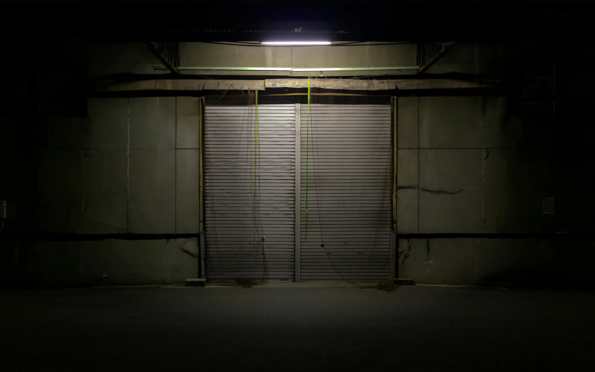

Tien feestdagen.Plus de dag die niemand plant
België telt tien wettelijke feestdagen, en een regel die er een elfde sluitingsdag van maakt zonder dat iemand eraan denkt.
+32 460 25 44 13. Bel haar zelf: er neemt een AI op.
Vier ervan verspringen elk jaar
De tien wettelijke feestdagen zijn 1 januari, Paasmaandag, 1 mei, Hemelvaart, Pinkstermaandag, 21 juli, 15 augustus, 1 november, 11 november en 25 december. Bron: FOD Werkgelegenheid.
Zes ervan staan vast op een datum. Vier verspringen elk jaar — Paasmaandag, Hemelvaart, Pinkstermaandag — en dat is precies waarom een telefoonregeling die één keer is ingesteld na twee jaar niet meer klopt.
Een jaarlijkse herziening van tien minuten volstaat. Wie ze niet doet, heeft een lijn die op Pinkstermaandag open staat en op een gewone maandag dicht.

Gesloten zijn zonder onbereikbaar te zijn.
De regel die de elfde dag maakt
Hier zit het punt dat de meeste zelfstandigen missen. Valt een wettelijke feestdag op een zondag of op een gewone rustdag in de onderneming, dan moet hij worden vervangen door een andere dag waarop normaal wordt gewerkt (FOD Werkgelegenheid).
Het gevolg: er verdwijnt geen sluitingsdag, hij verplaatst zich — en hij verplaatst zich naar een dag waarop uw klanten wél verwachten dat u er bent. Dat is het slechtste scenario voor een telefoonlijn: gesloten zijn op een dag die er voor de buitenwereld gewoon uitziet.
Op een echte feestdag belt niemand met verbazing als er niet wordt opgenomen. Op een vervangingsdag wel.
Gesloten zijn zonder onbereikbaar te zijn
Een feestdag is geen reden om oproepen te verliezen. De lijn neemt op, zegt dat de zaak vandaag gesloten is, geeft de dag van heropening, en doet wat u hebt toegestaan: een afspraak vastleggen of een bericht opnemen met naam, nummer en onderwerp.
Voor de sectoren waar een feestdag juist een piek is — horeca, dépannage, dierenartsen — geldt het omgekeerde: het is een dag met meer oproepen, niet minder, en de lijn behandelt er meerdere tegelijk.
Uitzonderlijke sluitingen en feestdagen zijn parameters, geen ontwikkelingen. Ze worden ingesteld zonder aan de rest van het gedrag van de lijn te raken.
De feestdagen: uw vragen
Hoeveel wettelijke feestdagen telt België ?
Wat is een vervangingsdag ?
Waarom is dat lastig voor de telefoon ?
Moet ik dat elk jaar herzien ?
En als een feestdag juist een piek is ?
Waar staan de gegevens ?
Tien dagen staan vast. De elfde verrast u.
+32 460 25 44 13. Zet de elf dagen nu vast, niet in december.